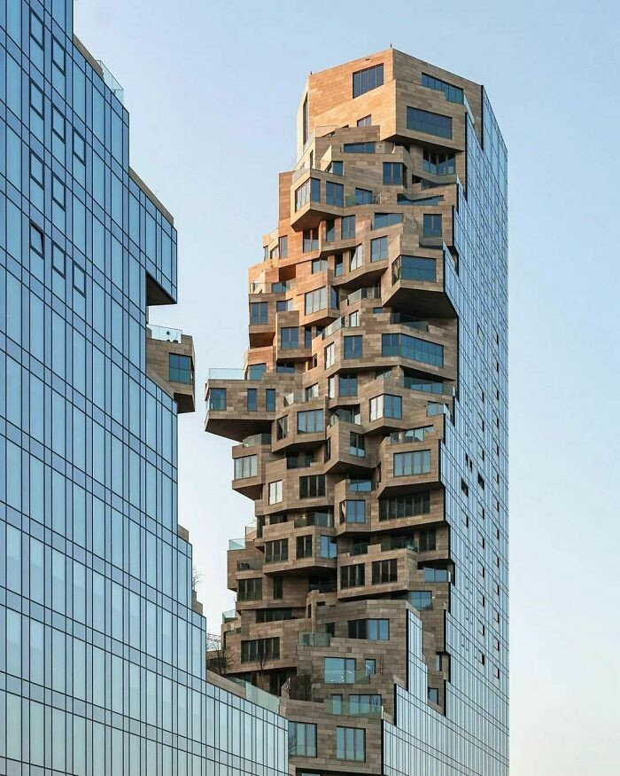
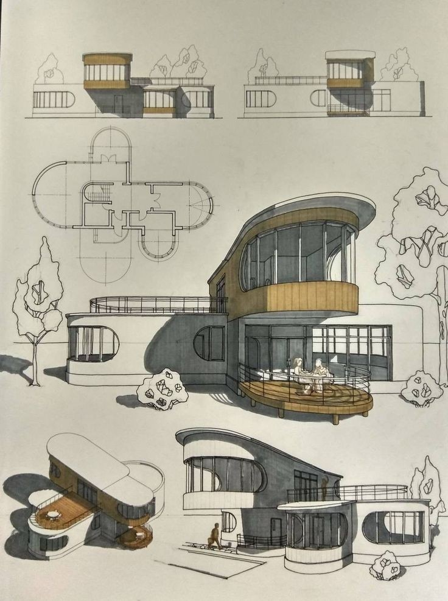
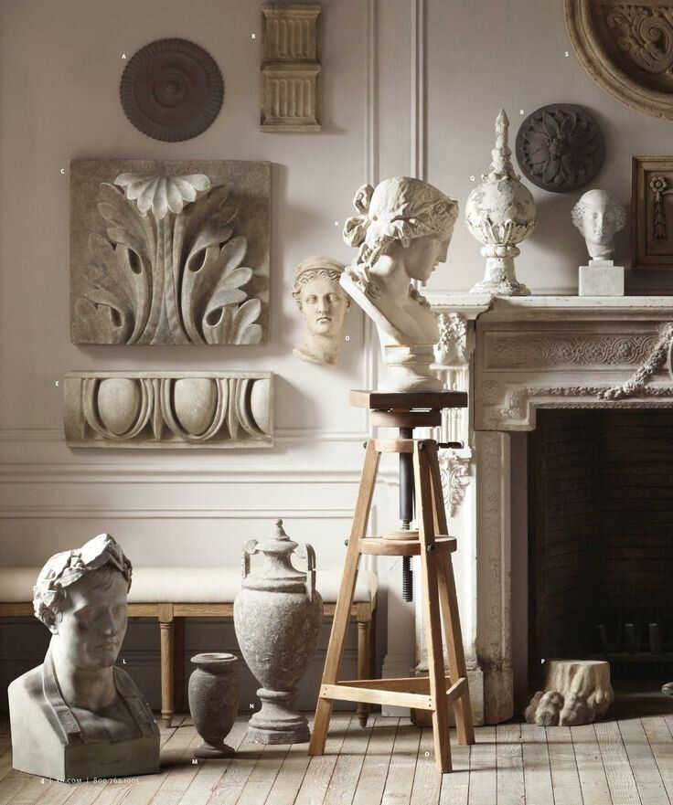
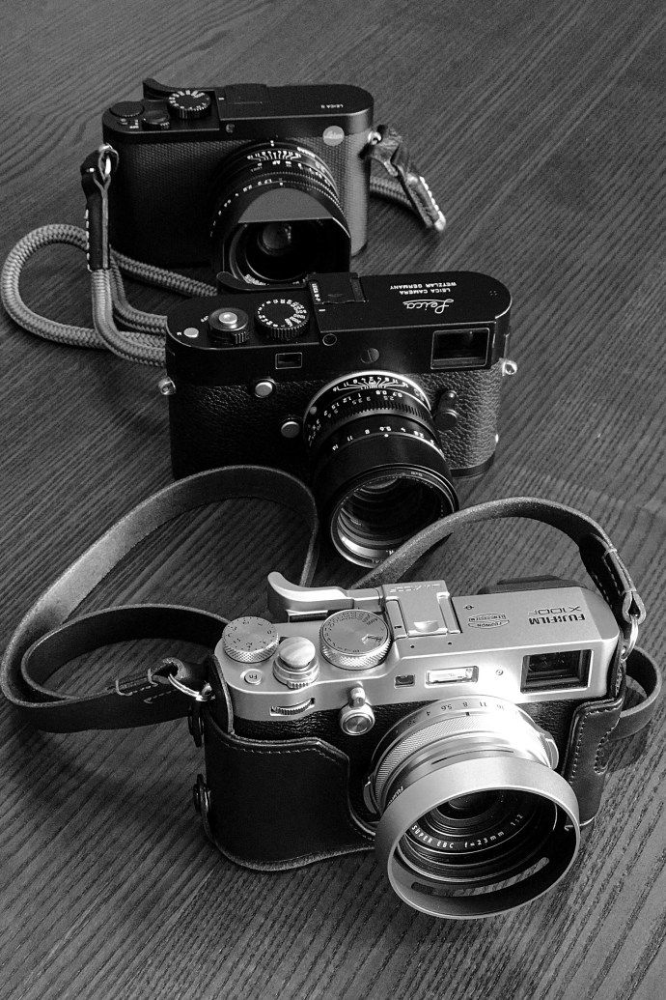
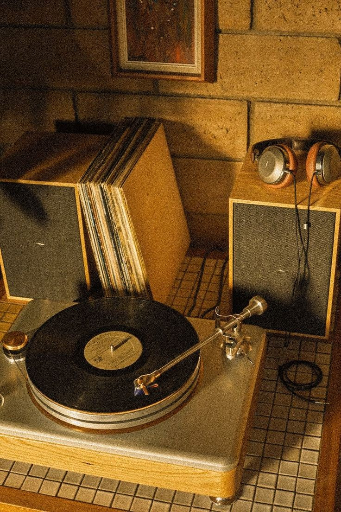
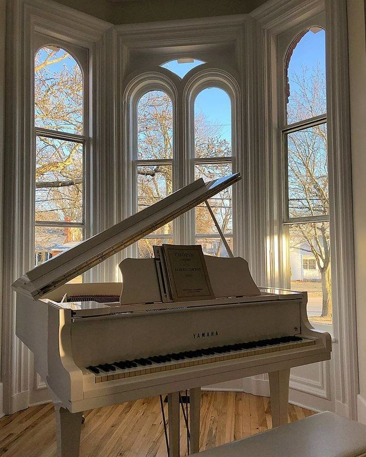
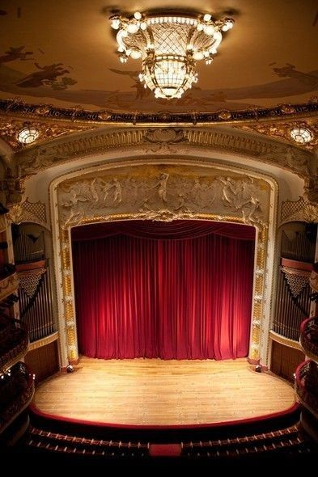
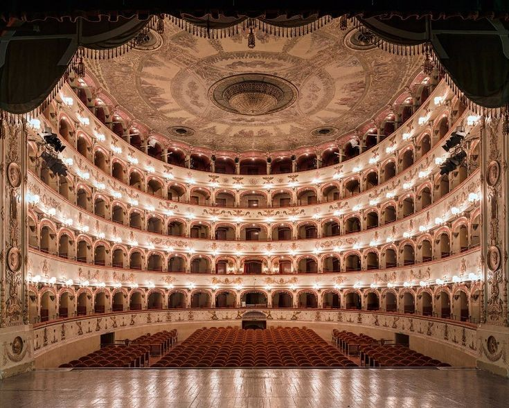
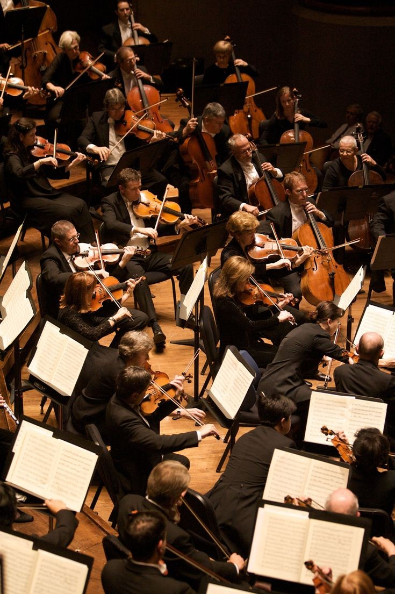
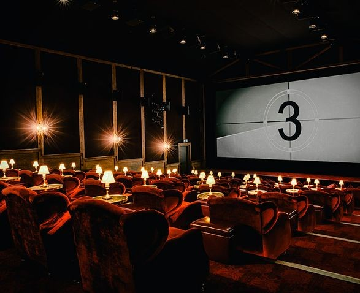

Bien sûr ! Parlons de l'architecture. L'architecture est un domaine fascinant qui
englobe la conception, la planification et la construction d'édifices et d'espaces.
C'est un art qui a évolué au fil du temps, reflétant les cultures, les technologies
L'histoire de l'architecture remonte à l'Antiquité, où des civilisations comme
les Égyptiens, les Grecs et les Romains ont laissé des monuments emblématiques tels
que les pyramides, les temples et les amphithéâtres. Au Moyen Âge, l'architecture
gothique a émergé avec ses cathédrales élaborées, tandis que la Renaissance a apporté
un retour aux formes classiques et à l'harmonie proportionnelle.

Au fil des siècles, l'architecture a continué d'évoluer, influencée par des
mouvements artistiques et des avancées technologiques. Le 19e siècle a vu l'émergence
de l'architecture industrielle, caractérisée par l'utilisation de matériaux tels que
le fer et le verre. Le 20e siècle a connu divers mouvements, tels que le modernisme,
le brutalisme et le postmodernisme, chacun apportant sa propre esthétique et
philosophie.
Aujourd'hui, l'architecture contemporaine intègre des concepts durables, des
technologies innovantes et une approche axée sur l'efficacité énergétique. Les
architectes explorent également des idées novatrices telles que les bâtiments
intelligents, les espaces verts urbains et la réutilisation adaptative des structures
existantes.

En France, l'architecture a une riche histoire, avec des monuments emblématiques
tels que la Tour Eiffel, le Louvre et la cathédrale Notre-Dame de Paris. Les
architectes français, tels que Le Corbusier, ont également joué un rôle majeur dans le
développement de mouvements architecturaux influents.
Sculpture
La sculpture est un art ancien qui remonte à des millénaires. Elle implique la
création de formes tridimensionnelles en sculptant ou en modelant des matériaux tels
que la pierre, le bois, le métal, l'argile, et même des matériaux contemporains comme
le plastique. La sculpture offre aux artistes un moyen unique de donner vie à
leurs idées et de représenter la beauté et la diversité du monde qui les entoure.
L'histoire de la sculpture est vaste et diversifiée. Les premières sculptures
connues remontent à la Préhistoire, avec des exemples tels que les figurines
de Vénus préhistoriques. Les civilisations anciennes, telles que l'Égypte,
la Grèce et Rome, ont laissé des sculptures emblématiques représentant des
divinités, des héros et des personnalités importantes. Les périodes de la
Renaissance et du Baroque en Europe ont vu un renouveau de l'art de la
sculpture, avec des œuvres maîtresses comme le David de Michel-Ange et
le Bernin.
Les styles et les techniques de sculpture ont évolué au fil des siècles, allant des
formes figuratives aux expressions abstraites et contemporaines. Les sculpteurs
explorent différentes méthodes, telles que la taille directe, la modélisation, et
l'assemblage de matériaux. La sculpture contemporaine intègre souvent des concepts
conceptuels, des technologies modernes et des matériaux non traditionnels.
La sculpture ne se limite pas aux monuments ou aux statues publiques. Elle
englobe également des œuvres d'art plus petites, des installations, et même des
sculptures cinétiques qui prennent vie avec le mouvement. Les artistes sculpteurs
s'expriment à travers une variété de thèmes, allant de l'exploration de la nature à
la réflexion sur des questions sociales et politiques.
En France, la sculpture a joué un rôle significatif dans le monde de l'art.
Des artistes tels que Auguste Rodin ont marqué l'histoire de la sculpture avec des
œuvres emblématiques comme "Le Penseur". Aujourd'hui, de nombreux sculpteurs français
contemporains continuent d'innover et de contribuer à l'évolution de cet art
fascinant. La sculpture demeure un moyen puissant de capturer l'imagination et
d'exprimer la créativité humaine à travers le langage tactile et visuel.

Arts visuels
Les arts visuels englobent un large éventail de disciplines artistiques qui
s'expriment principalement à travers des éléments visuels, tels que la peinture,
la sculpture, la photographie, le dessin, l'architecture, la vidéo, l'art numérique
et bien d'autres. Ces formes artistiques visent à créer une expérience esthétique et
émotionnelle chez le spectateur en utilisant des éléments visuels comme le point
de départ de la communication artistique.
Peinture : La peinture est l'une des formes d'art visuel les plus anciennes et
traditionnelles. Les artistes utilisent des techniques variées, des médiums et des
styles pour créer des œuvres qui explorent des thèmes allant de l'abstrait
au figuratif.
Sculpture : Comme mentionné précédemment, la sculpture est l'art de créer des
formes tridimensionnelles en utilisant divers matériaux. Les sculptures
peuvent être massives, comme des monuments, ou plus petites et destinées à
une expérience plus intime.
Dessin : Le dessin est une forme d'expression artistique qui peut aller de
simples esquisses à des œuvres plus élaborées. Il peut être réalisé avec
divers outils, tels que des crayons, des encres, des pastels ou même
numériquement.

Photographie : La photographie est un moyen de capturer et de figer des
moments dans le temps. Les photographes utilisent la lumière, la composition
et la perspective pour créer des images qui peuvent être à la fois
documentaires et artistiques.
Architecture : L'architecture combine l'art visuel et la fonctionnalité dans
la conception de structures et d'espaces. Les architectes créent des environnements
qui influent sur la façon dont nous vivons, travaillons et interagissons avec notre
environnement bâti.
Art numérique : Avec l'avancement de la technologie, l'art numérique a émergé
comme une forme artistique contemporaine. Les artistes utilisent des logiciels,
des graphiques par ordinateur et d'autres technologies pour créer des œuvres
visuelles uniques.
Installations artistiques : Les installations artistiques sont souvent des œuvres
d'art en trois dimensions créées pour un lieu spécifique. Elles peuvent impliquer
des éléments sculpturaux, des performances, des jeux de lumière, etc.
Les arts visuels jouent un rôle essentiel dans la culture, permettant aux artistes
d'exprimer des idées, de susciter des émotions, de questionner la réalité et de
communiquer des messages sociaux et politiques. Ils offrent également une diversité
infinie de perspectives et d'approches, reflétant la richesse de la créativité
humaine à travers les époques et les cultures.
La Musique

La musique est un langage universel qui transcende les barrières culturelles et
linguistiques, évoquant des émotions, des souvenirs et des expériences partagées.
C'est une forme d'art sonore qui utilise des éléments tels que la mélodie,
le rythme, l'harmonie et la dynamique pour créer des compositions expressives.
Voici quelques aspects essentiels de la musique :
Genres musicaux : La musique englobe une vaste gamme de genres, des classiques comme
le jazz, le rock, la pop, le hip-hop, la musique électronique, la musique
folklorique, la musique du monde et bien d'autres. Chaque genre a ses propres
caractéristiques stylistiques, historiques et culturelles.
Éléments musicaux :
Mélodie : La séquence de notes qui forme la ligne principale d'une pièce.
Rythme : Le motif temporel et la pulsation qui sous-tendent la musique.
Harmonie : La combinaison simultanée de notes pour créer des accords.
Dynamique : Les variations de volume qui ajoutent de l'expressivité.
Instruments de musique : Les instruments jouent un rôle clé dans la création de
musique. Ils peuvent être classés en différentes catégories, tels que les
instruments à cordes, à vent, à percussion et électroniques.
Composition et interprétation : Les compositeurs créent des œuvres musicales en
écrivant des partitions, tandis que les interprètes donnent vie à ces compositions
à travers des performances live ou des enregistrements.
Évolution de la musique : La musique évolue constamment, reflétant les changements
sociaux, culturels et technologiques. Des époques musicales distinctes, comme la
musique baroque, classique, romantique et contemporaine, ont laissé leur empreinte
sur l'histoire de la musique.
Impact culturel : La musique a un impact profond sur la culture. Elle peut
servir de moyen d'expression artistique, de catharsis émotionnelle, de
protestation sociale, et elle accompagne souvent des moments clés de la vie.
Technologie et musique : Les avancées technologiques ont révolutionné la
création, la production et la diffusion de la musique. L'enregistrement
audio, la synthèse sonore, les logiciels de production musicale et la
diffusion en streaming ont tous contribué à façonner le paysage musical
contemporain.
Musique et émotions : La musique a le pouvoir de susciter une gamme variée
d'émotions, qu'il s'agisse de joie, de tristesse, d'excitation ou de contemplation.
Elle est souvent utilisée comme moyen de communication émotionnelle universelle.
En résumé, la musique est bien plus qu'une simple série de sons organisés. Elle est
une forme artistique profonde qui transcende les frontières culturelles, influençant
nos vies de manière significative. Que ce soit pour célébrer, se détendre, réfléchir
ou simplement apprécier la beauté des sons, la musique reste une partie intégrante de
l'expérience humaine.

La Littérature
La littérature est un art qui utilise le langage écrit pour exprimer des idées, des émotions et des expériences. Elle englobe une vaste gamme de formes, y compris la poésie, le roman, la nouvelle, le théâtre, l'essai, et bien d'autres. Voici quelques points clés pour comprendre la littérature :
Genres littéraires : La littérature comprend divers genres, chacun ayant ses
propres caractéristiques et conventions. Parmi les genres les plus courants, on
trouve la fiction (romans, nouvelles), la poésie, le théâtre, l'essai, la biographie,
et le conte.
Styles littéraires : Les écrivains développent leur style personnel qui peut
être narratif, descriptif, lyrique, satirique, ou même expérimental. Le choix du
langage, la structure des phrases et l'utilisation des figures de style contribuent
au style d'un écrivain.
Mouvements littéraires : Au fil de l'histoire, la littérature a été influencée
par divers mouvements tels que le romantisme, le réalisme, le symbolisme, le modernisme,
le postmodernisme, et d'autres. Ces mouvements reflètent les préoccupations artistiques
et sociales de leur époque.
Les classiques littéraires : Certains ouvrages littéraires ont
acquis le statut de "classiques", étant considérés comme des œuvres exceptionnelles
et intemporelles. Des auteurs tels que William Shakespeare, Jane Austen, Leo Tolstoï
et Gabriel García Márquez ont créé des œuvres qui continuent à être étudiées et
appréciées.
Rôle de la littérature : La littérature joue un rôle essentiel dans
la société en reflétant les valeurs, les croyances et les défis de l'époque. Elle peut
également servir de moyen d'exploration intellectuelle, de critique sociale, et d'outil
pour susciter la réflexion et l'empathie.
Écriture contemporaine : La littérature contemporaine est diversifiée
et exploratoire. Les auteurs contemporains explorent des thèmes variés et adoptent
souvent des approches innovantes en termes de narration, de structure et de style.
Langue et traduction : La littérature est souvent liée à une
langue particulière, mais les traductions permettent à une œuvre d'être accessible à
un public mondial. La traduction littéraire joue un rôle crucial dans la diffusion
des idées à travers les cultures.
Influence sur les arts : La littérature interagit souvent avec
d'autres formes d'art, comme le cinéma, la musique, la peinture, et inspire des adaptations
dans d'autres médias.
En résumé, la littérature est une fenêtre sur l'âme humaine, offrant des perspectives sur
la condition humaine, la diversité des expériences, et les défis de la vie. Elle continue
de façonner notre compréhension du monde, nourrissant notre imagination et stimulant
notre réflexion.
Arts de la scène
Les arts de la scène désignent un ensemble d'expressions artistiques qui sont
interprétées devant un public en direct. Ces formes d'art incluent le théâtre,
la danse, la musique jouée en direct, l'opéra, le cirque et d'autres performances
qui ont lieu sur scène. Voici quelques éléments clés concernant les arts de la
scène :
Théâtre : Le théâtre est une forme d'art qui utilise la performance
en direct pour présenter des histoires, des idées et des émotions. Les acteurs,
metteurs en scène, concepteurs de décors et de costumes collaborent pour créer
une expérience théâtrale unique.
Danse : La danse est une forme artistique qui utilise le mouvement du
corps pour exprimer des idées, des émotions et des récits. Les genres de danse incluent
la danse classique, la danse contemporaine, la danse jazz, la danse hip-hop, et
d'autres styles.


Musique jouée en direct : Les concerts et les performances musicales
en direct font partie des arts de la scène. Cela inclut des orchestres, des groupes
de musique, des chanteurs solistes et d'autres musiciens qui se produisent sur scène
devant un public.
Opéra : L'opéra combine la musique et le théâtre, mettant en scène des
chanteurs et des musiciens pour raconter des histoires à travers des compositions
vocales et instrumentales. Les opéras incluent souvent des éléments dramatiques
et visuels élaborés.
Cirque : Le cirque est une forme d'art de la scène qui combine des
éléments de spectacle, d'acrobatie, de jonglerie, de clowneries et d'autres performances
physiques et artistiques.
Improvisation : Certains arts de la scène, en particulier le théâtre
d'improvisation, impliquent des performances spontanées où les acteurs créent des
scènes et des dialogues sans script préétabli.
Mise en scène et direction : Les metteurs en scène et les directeurs
artistiques jouent un rôle crucial dans la création et la réalisation des arts de la
scène. Ils dirigent les acteurs, chorégraphient les mouvements, et supervisent tous
les aspects de la production.
Interaction avec le public : Les arts de la scène impliquent souvent
une interaction directe avec le public. Les réactions en direct et l'énergie de
l'auditoire sont des éléments clés de l'expérience des arts de la scène.

Les arts de la scène offrent une expérience artistique immersive, permettant au
public de vivre la performance en direct. Ils sont un moyen puissant de transmettre
des émotions, des idées et des récits, créant des moments mémorables et enrichissants
pour ceux qui y assistent. Ces formes d'art jouent un rôle essentiel dans la diversité
culturelle et artistique de nos sociétés.
Cinéma
Le cinéma est une forme d'art visuel et narratif qui combine le mouvement,
l'image, le son et la narration pour créer une expérience immersive. Il s'agit
d'un médium puissant qui a évolué depuis son invention au début du 20e siècle
pour devenir l'une des formes de divertissement les plus influentes et appréciées
dans le monde. Voici quelques éléments clés concernant le cinéma :
Histoire du cinéma : Les frères Lumière sont souvent crédités de la première projection
cinématographique publique en 1895. Depuis lors, le cinéma a connu une croissance exponentielle,
passant du cinéma muet aux films sonores, puis à la couleur, à la 3D et aux effets spéciaux
avancés.
Genres cinématographiques : Le cinéma englobe une variété de genres, notamment le drame,
la comédie, l'action, la science-fiction, l'horreur, le documentaire, le film d'animation,
et bien d'autres. Chaque genre a ses propres conventions narratives, esthétiques et
émotionnelles.
Rôle des réalisateurs : Les réalisateurs jouent un rôle clé dans la création d'un film.
Ils sont responsables de la mise en scène des acteurs, du choix des angles de caméra, de
la direction artistique, du montage et de la cohérence globale de la vision du film.
Acteurs et performances : Les acteurs sont les visages et les voix des films. Leur
interprétation des personnages donne vie aux scénarios, évoque des émotions et crée une
connexion entre le public et l'histoire.

Scénario et narration : Un bon scénario est la pierre angulaire d'un film réussi.
Il crée une structure narrative, développe des personnages complexes et engage le public
à travers des rebondissements et des développements intrigants.
Bande sonore : La musique et les effets sonores contribuent à l'atmosphère et à l'émotion
d'un film. Une bande sonore bien choisie peut renforcer les moments clés et créer une
expérience sensorielle mémorable.
Technologie cinématographique : Les avancées technologiques ont considérablement influencé
le cinéma. Des caméras haute résolution aux effets spéciaux numériques, la technologie
a élargi les possibilités créatives des réalisateurs.
Festivals de cinéma : Les festivals de cinéma, tels que Cannes, Sundance, et Berlinale,
sont des plateformes cruciales pour présenter des films indépendants et internationaux,
ainsi que pour honorer les réalisateurs et acteurs talentueux.
Impact culturel : Le cinéma a un impact profond sur la culture populaire et la société.
Il peut influencer les opinions, refléter les préoccupations sociales, et offrir une
fenêtre sur différentes réalités culturelles.
Le cinéma est bien plus qu'un simple divertissement. C'est un moyen d'expression artistique
qui explore la condition humaine, provoque la réflexion, et offre une expérience cinématographique
unique. De l'écran géant aux services de streaming en ligne, le cinéma continue de captiver
et de divertir les publics du monde entier.